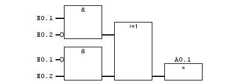

4.2 SPS Programmier-Sprachen nach IEC 61131-3
Allgemeiner Aufbau eines SPS-Projekts
- Die Folgenden Inhalte orientieren sich an der Software Twincat 3 von Beckhoff
- Die Inhalte sind aber auch auf andere SPS-Programmiersysteme übertragbar
- Da die Twincat 3 Software tief ins System eingreift, wird nicht empfohlen diese auf den privaten Rechnern zu installieren
- Die Software ist aber auf den Rechnern im Labor installiert
- Als Alternative, kann die Software OpenPLC Editor empfohlen werden
Projektstruktur
- Ein Projekt besteht aus einem oder mehreren Programmen, welche in einer
POU(Program Organization Unit) zusammengefasst werden

Am Beispiel TwinCat
- Entwicklungsumgebung der Firma Beckhoff Automation für SPS Steuerungslogiken
- Kann auf der Steuerung oder anderem PC ausgeführt werden
- Links sieht man die Gesamtübersicht über das Projekt (Projektexplorer)
- Twincat bietet ein Fester für die Variablendeklaration (rechts oben) und ein Fester für den sonstigen Code an (rechts unten)

Programmablauf in Verarbeitungseinheit

- Nach dem EVA-Prinzip überwacht die SPS in regelmäßigen Abständen (Zykluszeit) die Werte der Eingänge und führt das
- Hauptprogramm
(.../POUs/MAIN (PRG))aus
Hauptprogramm (Main-Program)
- Entsprechend der
code.pybei Circuit Python gibt es eineMAIN-Programm - Währen wir im
code.pyeinenwhile-Loop erstellen mussten, wir der Inhalt derMAINimmer wieder automatisch in der Zykluszeit der SPS ausgeführt
- Das Hauptprogramm wird in einer Entwicklungsumgebung geschrieben
- Hierzu kommen verschiedene Programmiersprachen zum Einsatz
- Nach Prüfung und Fehlerbeseitigung erstellt der Compiler dann den Programmcode, der auf die Steuerung geladen werden kann.
- liegt dann auf dem Speicher der SPS und kann verändert werden
Programmiersprachen für SPS
- fünf Programmiersprachen (nach IEC 61131)
- Strukturierter Text, ST (engl. Structured Text, ST) ähnlich Pascal
- Anweisungsliste, AWL (engl. Instruction List, IL)
- Kontaktplan, KOP (engl. Ladder Diagram, LD)
- Funktionsbausteinsprache, FBS oder FUP genannt (engl. Function Block Diagram, FBD)
- Ablaufsprache, AS (engl. Sequential Function Chart, SFC)
Programm
- Programm liefert bei der Ausführung einen oder mehrere Werte und speichert diese in Variablen
- Alle Werte bleiben nach einer Ausführung des Programms bis zur nächsten Ausführung erhalten
- z.B. der Status der Lampe im Hauptprogramm bis zur Ausführung des nächsten Zyklus

✍️ Aufgabe 4_2_1: Automatik Licht
Anwendungsfall: Eine smarte Lichtsteuerung soll eine Leuchte immer anschalten, wenn es dunkel ist und eine Anwesenheit erkannt wird
- Für unsere smarte Lichtsteuerung könnte das für eine Programmierung mittels Strukturiertem Text wie folgt aussehen, wenn wir statt analogen digitale Eingänge verwenden:
PROGRAM MAIN // Main Programm wird definiert
VAR // Variablen werden deklariert
bInAnwesenheit1 : BOOL; // der Variable für Anwesenheit. True = Anwesend
bInDunkelheit2 : BOOL; // der Variable für Anwesenheit. True = Dunkel
bOutLicht1 : BOOL; // der Variable für Licht. True = An
END_VAR
bOutLicht1 := bInAnwesenheit1 AND bInDunkelheit2; // Logische Verknüpfung (nur wenn beides erfüllt ist, geht das Licht an)
- Welche Unterschiede zu Python fallen Ihnen auf?
✔️ Lösung
PROGRAM MAIN // Main Programm wird definiert
VAR // Variablen werden deklariert
bInAnwesenheit1 : BOOL; // der Variable für Anwesenheit. True = Anwesend
bInDunkelheit2 : BOOL; // der Variable für Anwesenheit. True = Dunkel
bOutLicht1 : BOOL; // der Variable für Licht. True = An
END_VAR
bOutLicht1 := bInAnwesenheit1 AND bInDunkelheit2; // Logische Verknüpfung (nur wenn beides erfüllt ist, geht das Licht an)
// eingeführt
* Zeilen werden mit ; abgeschlossen
* Variablen und Ihr Typ müssen deklariert werden
(Name und Datentyp werden festgelegt): <Variablenname>:<Typ>
* Der Wert der Variable wird über := gesetzt:
<Variablenname>:=<Variablenwert>
Wichtige Datentypen
BOOL: BooleanINT: Integer (nur positiv)- z.B. Bit-Werte der Eingangsklemmen
UNIT: Unsigned Integer (nur positiv)REAL: Gleitkommazahl- z.B. Interne Darstellung der physikalischen Gößen
- weitere
IF-Anweisungen
- IF-Anweisung kann man eine Bedingung abprüfen und abhängig von dieser Bedingung ein Anweisungen ausführen
IF <Boolescher_Ausdruck1> THEN
<IF_Anweisungen>
{ELSIF <Boolescher_Ausdruck2> THEN
<ELSIF_Anweisungen1>
.
.
ELSIF <Boolescher_Ausdruck n> THEN
<ELSIF_Anweisungen n-1>
ELSE
<ELSE_Anweisungen>}
END_IF;
Ausdrücke in den {} sind optional
Beispiel
IF temp<17 THEN
heizung_an := TRUE;
ELSE
heizung_an := FALSE;
END_IF;
- Keine Einrückungen wie bei Python erforderlich
✍️ Aufgabe 4_2_2: Wechselschaltung

- Wie können wir dafür sorgen, dass das Licht den Zustand wechselt, wenn einer der beiden Schalter betätigt wird?
✔️ Lösung
IF (bInS1 OR bInS2) THEN
bOut1 = not(bOut1)
else:
bOut1 = bOut1
Funktionsbausteine
- Funktionsbaustein liefert einen oder mehrere Werte.
- Die Werte der Ausgabevariablen und der internen Variablen bleiben bis zur nächsten Ausführung erhalten (lokalen Variablen werden nicht gelöscht)
- Vergleichbar eine Klasse, mit einer Methode, die immer wieder aufgerufen wird
- Vorsicht: bei mehrmaligem Aufruf mit denselben Eingabevariablen werden so nicht unbedingt dieselben Ausgabewerte geliefert vgl. Hysterese)
Funktionsbaustein
- Zunächst wird eine Blaupause (Klasse) erstellt, sie beschreibt, welche Ein-, Ausgaben, und Zwischenwerte ein Funktionsbaustein enthält (Variablen) und welche Berechnungen diese ausführt
- Im Hauptprogramm (
MAIN) können eine oder mehrere Objekte des Bausteins instanziiert werden (als Variable deklariert werden) - Auch bei der Arbeit mit Funktionsbausteinen gilt das EVA-Prinzip
Warum gibt es beides - Funktionen und Funktionsbausteine?
- z.B. Anwendung von Funktionsbaustein für verschiedene Räume
- nach 100 Bewegungen soll gelüftet werden
- würde mit Funktion eine globale Variable pro Raum benötigen
✍️ Aufgabe 4_2_3: Funktionsbaustein Counter
- Schreiben Sie eine Klasse für einen Funktionsbaustein, der eine Zählervariable um eins erhöht und den aktuellen Wert zurückgibt
- Zudem soll der Zähler zurückgesetzt werden können
class Counter:
def __init__(self):
self.count = 0
✔️ Lösung
class Counter:
def __init__(self):
self.count = 0
def increment(self):
self.count = self.count + 1
return self.count
def reset(self):
self.count = 0
return self.count
c = Counter()
c.increment()
c.increment()
print(c.increment())
Verwendung von Programm-Organisationseinheiten
- Programme
- Direkte Verbindung zu Ein- und Ausgabeeinheiten
- Grundgerüst ist das Hauptprogramm
MAIN, welches zyklisch ausgeführt wird und angibt welche Funktionen und Funktionsbausteine aufgerufen werden - Funktion
- Wiederverwendbare Elemente
- Es gibt viele Standardfunktionen
- ohne internen Speicher
- Funktionsbausteine
- Komplexer as Funktionen
- Können Variablen erhalten
- z.B. Zähler
Strukturierter Text
Anweisungen
-
Wie in anderen höheren Programmiersprachen gibt es Anweisungen die den Text strukturieren
-
Zuweisung: Auf der linken Seite einer Zuweisung
:=steht ein Operand (Variable, Adresse), dem der Wert des Ausdrucks auf der rechten Seite zugewiesen wird:
Var1 := Var2 * 10;
Aufruf von Funktionen und Funktionsblöcken
- Aufruf eines Funktionsblocks: Aufruf durch Namen der Funktion oder Instanz des Funktionsblocks und in Klammer die gewünschten Werte der Parameter

- hier wird die Funktion
FINDaufgerufen, umSTR2inSTR1zu finden - Die übergebenen Parameter sind beide Zeichenketten / Strings
- Funktionen haben einen fixen Rückgabetyp (z.B. die Position als INT)
Globale und lokale Variablen
- Wichtiges Prinzip in der Programmierung
- Verhindert unbeabsichtigte Eingriffe
- Nur globale Variablen sind von überall sichtbar
- lokale Variablen, können z.B. innerhalb eines Programms oder Funkion definiert werden und sind nur darin sichtbar
- Alle Variablen sind zunächst nur innerhalb der jeweiligen POU sichtbar
Arrays - Datenfelder (Listen gleichen Datentyps)
/ Deklaration
VAR
aCounter : ARRAY[0..9] OF INT;
END_VAR
//Deklaration mit Initialisierung:
aCounter : ARRAY[0..9] OF INT := [0, 10, 20, 30, 40, 50, 60, 70, 80, 90];
//Datenzugriff 1:
//Der lokalen Variablen wird der Wert 20 zugewiesen.
nLocalVariable := aCounter[2];
Weitere Anweisungen
Returnwird genutzt, um einen Baustein zu verlassenEXIT-Anweisung** wenn diese in einer FOR-, WHILE- oder REPEAT-Schleife vorkommt, dann wird die innerste Schleife beendet, ungeachtet der Abbruchbedingung.- Aufruf einer Fuktion: Analog zu Python werden der Funktionsname genannt und in Klammern die Attribute übergeben (z.B.
SQRT(IN := 9))
Funktionsplan
üéØ Lernziele
Nach dieser Einheit sind Sie in der Lage dazu - einfache binäre Funktionspläne lesen und aufbauen - einfache Bausteine (Vergleiche, Mathematische Operatoren) interpretieren - die Wirkweise von Zeitbausteinen skizzieren und diese passenden Anwendungsfällen zuzuordnen
(Binärer) Funktionsplan (FUP)
- Grafische Programmiersprache, nach EVA-Prinzip (links nach rechts)
- Jeder Baustein ist ein Funktionsbaustein (Funktionsblock)
- Bausteine mit Symbolen z.B.
&für logisches und (\(\land\))-
>=1für logisches oder (\(\lor\)) -
Links gehen die Eingänge in die Bausteine. Ergebnisse werden rechts weitergegeben.
- Variablen die gesetzt werden stehen über den Bausteinen (vgl. Spule bei Kontaktplan, hier
A0.1)

Negieren von Ein- und Ausgängen
- Bei binären Ein- und Ausgängen kann der Wert durch einen Kreis negiert werden
TRUEwird zuFALSEFALSEwird zuTRUE
✍️ Aufgabe 4_2_4: Binärer Funktionsplan
E0.1 = TRUE
E0.2 = TRUE
- Was ist
A0.1?
✔️ Lösung
E0.1wird negiertE0.2wird negiertnot(E0.1) and not(E0.2) = Falsewird negiert- Ausgang des
&-Bausteins wird negiert A0.1 = True
Zeitbausteine
- Ein guter Bewegungsmelder würde nicht sofort erlöschen, wenn keine Bewegung mehr registriert wird, sondern für ein Nachleuchten der Lampen sorgen (Nachlauf)
- Die könnte über das Zählen der Zyklus-Zeiten gesteuert werden, hierzu müssten aber alle Zyklen auf jeder Steuerung gleich lang sein
- Stattdessen können spezielle Bausteine, wie z.B. TOF (Timer off), Ausschaltverzögerung eingesetzt werden.
TOF: Ausschaltverzögerung (Timer Off)
verlängert Signal nach Wechsel auf Off (False)
INbinärer EingangPTGesetzte AusschaltverzögerungQbinärer Ausgang mit ImpulsETVergangene Zeit seit Erkennen des Ende des Eingangsignals


✍️ Aufgabe 4_2_5 Erweiterung um Nachlauf von einer Sekunde
✔️ Lösung

Impulsbildung
wandelt positive Flanke in Impuls mit fixer Länge
INbinärer EingangPTGesetzte ImpulslängeQbinärer Ausgang mit ImpulsETVergangene Zeit seit Impulsstart (Elapsed Time)
TON: Einschaltverzögerung
verzögerte Aktivierung, sofern Mindestdauer erreicht
INbinärer EingangPTGesetzte EinschaltverzögerungQbinärer Ausgang mit ImpulsETVergangene Zeit seit Erkennen des Eingangsignals


TONR: Zeitakkumulator
Gibt aufsummierte Zeit sobald Mindestwert erreicht
ETZeit bis zur AusgabePTMaximalzeit bis AusgabeINbinärer Start-EingangRbinärer Reset-EingangQbinärer Ausgang zeigt wannPTerreicht
✍️ Aufgabe 2_4_6: Zeitbausteine
- Zeichnen Sie das Ausgangssignal
- einer Ausschaltverzögerung TOF mit
PT = 2s - eines Impulsgenerators TP mit
PT = 0.5s

✔️ Lösung
Zähler
Zählt Flanken (Änderungen
FalseaufTrue)
CUbinärer Eingang an dem die Flanken gezählt werden (Count Up)RReset-Eingang um Zähler zurückzusetzenPVOberer GrenzwertCVAusgang der hoch zählt (Counter Value)QZählerstatus im Vergleich mitPV

Weitere Bausteine
Trigger-Bausteine
- Erkennen steigende oder fallende Flanken
F_TRIGfür fallende FlankenR_TRIGfür steigende (rising) Flanken
- Anstelle von zurücksetzen der Taster (Bild)
- Szenenwechsel wird nur bei Aktivierung eines Tasters aktiviert

Speicherbausteine
Zuweisungen bleiben i.d.R. nur solange bestehen wie die Eingänge auf den vorherigen Block wirken.
- Zuweisungen bleiben i.d.R. nur solange wie die Eingänge auf den vorherigen Block wirken.
-
Speicherglieder und Flipflops erhalten den Wert, auch wenn die Setz-Bedingung nicht mehr gegeben ist.
-
Ausgang setzen im FUP
- Hier wird der Wert von
A0.1gesetzt (S für set)
SR-Flipflop
- der Ausgang
Qwird abhängig vom Signalzustand der EingängeS(et) undR(eset) dauerhaft gesetzt - Wenn der Signalzustand am Eingang
S=1und am EingangR=0ist, wirdQ=1gesetzt. S=0und am EingangR=1ist, wird aufQ=0zurück gesetzt.- bei SR-Flipfops dominiert Eingang
Sden EingangR. Bei1an beiden Eingängen wird der Operanden auf "1" gesetzt
| S | R | Q |
|---|---|---|
| 0 | 0 | Q |
| 1 | 0 | 1 |
| 0 | 1 | 0 |
| 1 | 1 | 1 |

RS-Flipflop
- Der Eingang
Rdominiert den EingangS. Bei einem Signalzustand1an beiden Eingängen wird der Signalzustand des angegebenen Operanden auf "0" zurückgesetzt.
| S | R | Q |
|---|---|---|
| 0 | 0 | Q |
| 1 | 0 | 1 |
| 0 | 1 | 0 |
| 1 | 1 | 0 |

Speicherbausteine und Variablen
- Ist das Programm in der Lage interne Variablen zu speichern, kann der Einsatz von Speicherbausteinen durch Zuweisungen ersetzt werden
Zusammenfassung und Ausblick
- komplexe neuartige Probleme lassen sich häufig am besten über strukturierten Text lösen
- für viele bestehende Anwendungsfälle stehen in verschiedenen Softwarelösungen bereits Funktionen und Funktionsblöcke bereit
Automatiklicht

bSwi: Eine steigende Flanke an diesem Eingang schaltet den Baustein und das Licht wechselweise ein und aus.bOn: Eine steigende Flanke an diesem Eingang schaltet den Baustein und das Licht gezielt ein.-
bOff: Eine steigende Flanke an diesem Eingang schaltet das Licht und die Gesamtfunktion des Bausteins aus. -
fOut: Steuerausgang für Lichtaktoren (0…100 %).
PID-Regler
fSetpointValue: Sollwert der Regelgröße-
fActualValue: Istwert der Regelgröße -
fOut: Ausgang des PID-Glieds -
Was fehlt noch?
fKp: ReglerbeiwerttTn: NachstellzeittTv: Vorhaltzeit- in
stParams